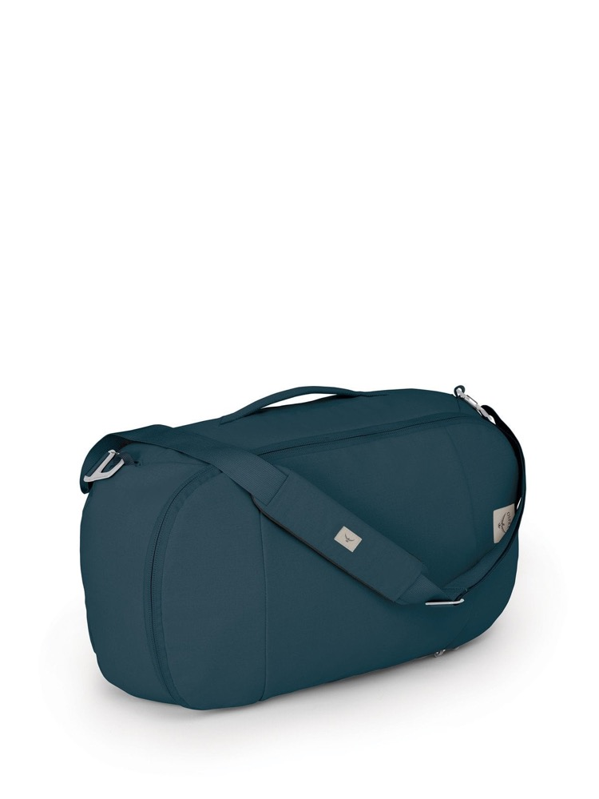

Most weekend bags force a choice. A duffel swallows anything you throw at it but wrecks one shoulder by the time you reach the platform. A backpack carries beautifully and then fights you every time you want something from the bottom of it. The Osprey Arcane Duffel Pack is a 30 litre attempt to stop choosing, and it is consistently one of Osprey's best sellers.
Note: this post contains affiliate links. If you buy through them I may earn a small commission at no cost to you, see my disclosure. Prices and discounts change often, so check the current price before you buy.
A genuinely good weekend and carry-on bag if you want one thing that hauls like a duffel and carries like a backpack. Buy it on discount rather than at full list, and skip it if you need structure, a shoe compartment, or a harness for long walks.
What It Actually Is
Thirty litres, soft shell, one big U-shaped zip that opens the whole top so you are looking down into the bag instead of burrowing through a tube. It carries three ways: a top grab handle, a side grab handle, and an over-the-shoulder strap. Then there is the part that matters, a backpack harness that tucks away behind a panel and pulls out when you need it.
Inside there is mesh organization along one side and a padded sleeve that takes a 15 to 16 inch laptop, sitting against the backpanel so the weight rides close to your spine in backpack mode. The fabric is certified recycled, and Osprey puts the figure at about twelve plastic bottles per bag.

The Arcane Duffel Pack in Stargazer Blue. Product image courtesy of Osprey.
Why It Works
The conversion is not a gimmick
Plenty of bags claim to convert and give you two thin webbing straps that cut into your shoulders as an apology. These are real padded straps on a real harness, and the tuckaway panel keeps them from dangling into an airport belt when you are not using them. That single feature is what makes this bag work on the kind of travel day where you check out of a hotel, walk to a station, and cover ground with everything on your back.
The U-zip beats a tube
A traditional duffel is a sack with a hole at one end, which means the thing you want is always at the bottom. The wide U-zip on the Arcane lets it open like a case, so you pack it in layers and see all of them at once. It is a small design decision that changes the daily experience of living out of a bag.
Soft shell, real advantage
There is no frame here, and on a carry-on bag that is a feature rather than a compromise. A soft 30 litre bag squashes into an airline sizer, wedges into an overhead that a hardside case would not take, and packs flat when it is empty. Hardside luggage is better at protecting fragile things. It is worse at almost everything else on a short trip.
The lock hook
There is a self-locking security hook built into the harness and shoulder strap, so the bag can be clipped shut or clipped to something fixed. It is not going to defeat anyone determined, but it defeats opportunism, which is what actually happens to bags in hostels and on trains.
Where It Falls Short
Three honest problems, none of them dealbreakers, all of them worth knowing before you buy.
- No structure at all. Empty, it slumps. Half full, it slumps. If you like a bag that stands up on its own and holds its shape while you pack it, this will irritate you every single time.
- No shoe or wet compartment. For a bag explicitly aimed at weekend getaways, there is nowhere to isolate muddy trainers or a damp swimsuit from your clean clothes. Bring a packing cube or a dry bag and the problem goes away, but you should not have to.
- The harness is for transit, not for hiking. No hipbelt, no ventilated backpanel. Thirty litres of dense packing on your back for twenty minutes across a city is fine. For an hour on a trail, you will feel every one of those litres sitting on your shoulders.
Who Should Buy It
This is the right bag if you take a lot of two to four night trips, want to move through transit without a wheeled bag rattling behind you, and value one bag that does two jobs over two bags that each do one perfectly.
It is the wrong bag if you are a one-bag traveler doing a fortnight out of a single pack, in which case you want a proper travel backpack with a real harness. It is also wrong if you mostly fly point to point and roll straight to a hotel, in which case a wheeled carry-on is less work.
The Guarantee Is Part of the Value
Osprey's All Mighty Guarantee covers the bag for its lifetime, any damage, any reason, whether they made the mistake or you did. They repair it or replace it. That materially changes the arithmetic on a bag like this, because you are not really comparing a $140 duffel to a $60 one. You are comparing a bag you will still be using in a decade to one you will replace twice in that time.
Frequently Asked Questions
Is the Osprey Arcane Duffel Pack carry-on size?
At 30 litres it sits comfortably inside standard carry-on limits for most major airlines, and the soft shell compresses into a sizer instead of jamming in it. It is a cabin bag rather than a personal item, so on a budget carrier that only includes an under-seat item you will still be paying for it.
Does the harness work as a real backpack?
For transit, yes. Real padded straps that tuck away when you are not using them, enough for a station, a city crossing, or a few flights of stairs. It is not a hiking harness, so there is no hipbelt and no ventilated backpanel.
Does it fit a laptop?
There is a dedicated padded sleeve for a 15 to 16 inch laptop, positioned against the backpanel so the weight rides close to you in backpack mode.
Is it worth the money?
At the full list price of around $140 it is fighting a crowded field, and the answer depends entirely on whether you want the conversion. It is discounted often and sometimes heavily, and at a discount it is easy value given the recycled fabric, the build, and a lifetime guarantee.
The Arcane Duffel is not trying to be the best duffel ever made or the best backpack ever made. It is trying to be the only bag you bring for a long weekend, and at that specific job it is very hard to argue with.